JavonLoong / AWES Evidence Page
Engineering Simulation
AWES 与 COMSOL仿真复刻
将 COMSOL 气动极线接入 Python 主仿真，复核高空风能系统的轨迹、张力、功率与 pumping-cycle 能量账本。这里保留能直接看的结果图，不放原始工程包。
42-case
围绕工况、曲线和结果边界组织软件闭环。
COMSOL 极线
用流场与气动系数支撑后续动力学计算。
Python 主仿真
输出轨迹、功率、张力和能量循环结果。
汇报材料
把建模、验证和结论整理成可讲述页面。
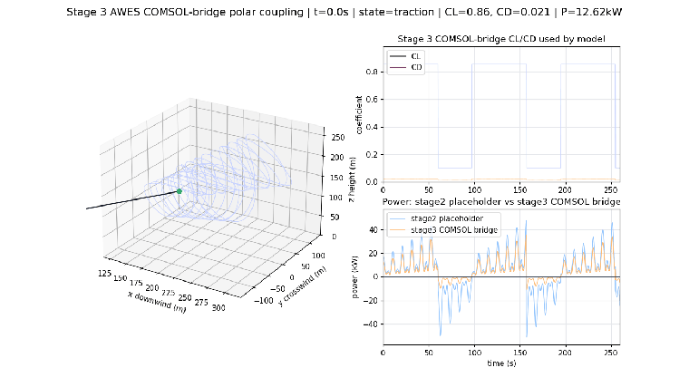
01
主仿真结果
轨迹、功率、张力和能量账本是这次复刻最直观的结果：它们说明模型不是停在几何或截图，而是跑到了可检查的动态输出。
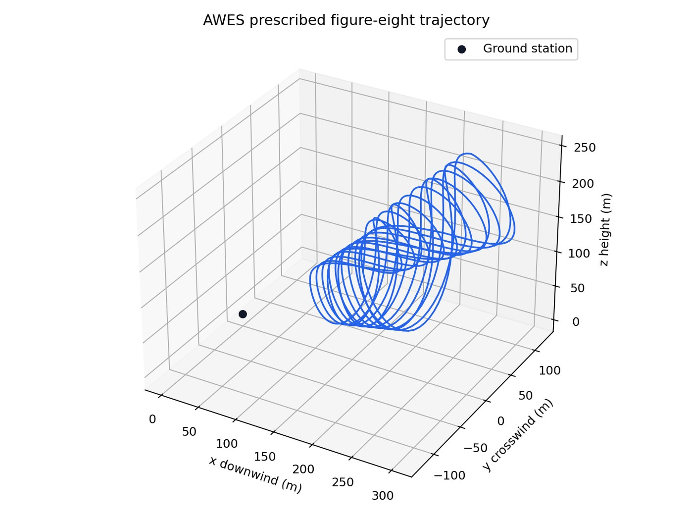
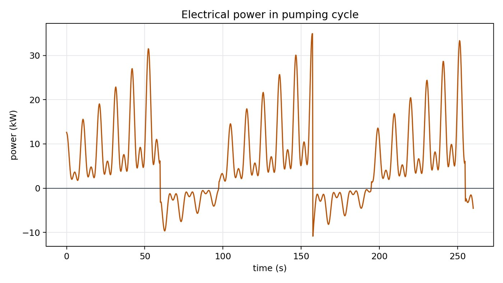
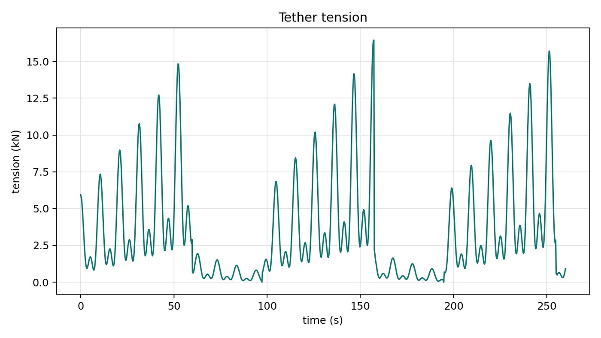
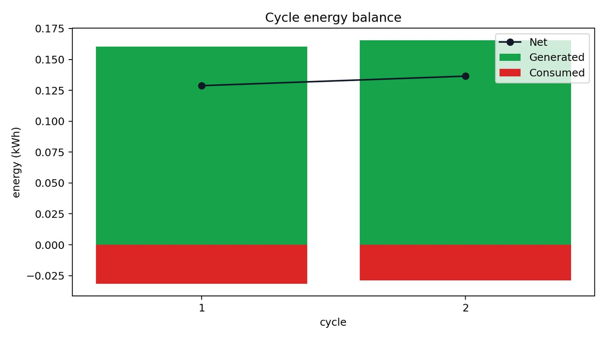
02
COMSOL 流场与气动极线
这里保留的是可视化证据：速度场、压力场、壁面分辨率和气动系数曲线。它们说明 COMSOL 部分承担的是气动输入与边界验证，而不是替代 Python 主仿真。
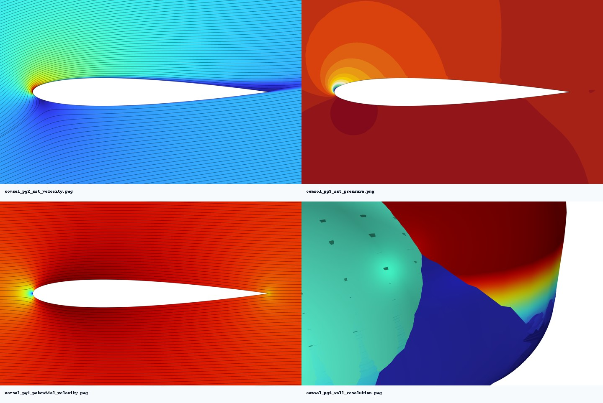
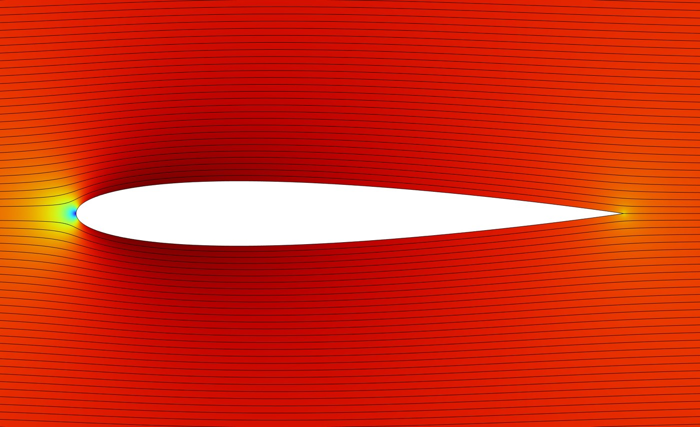
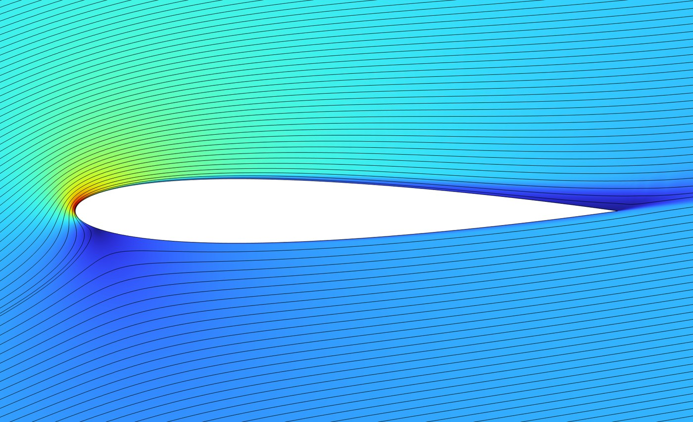
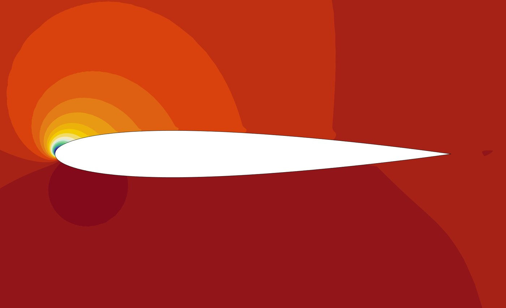
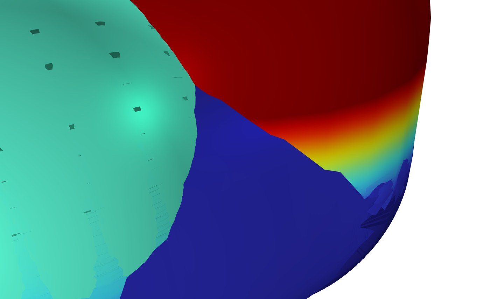
03
气动曲线与结果验证
这部分把气动系数和仿真输出放在一起看。重点不是图多，而是能说明从 COMSOL 输入到 Python 输出之间的证据链。
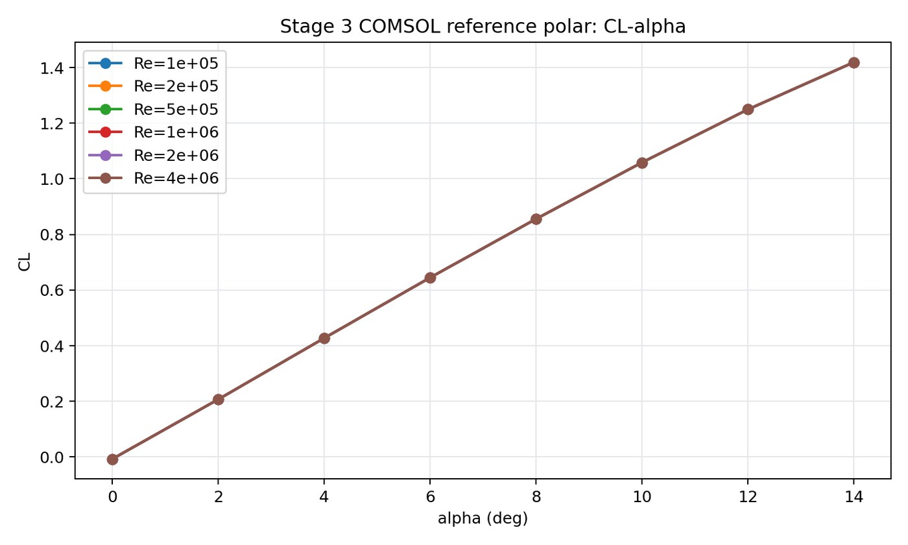
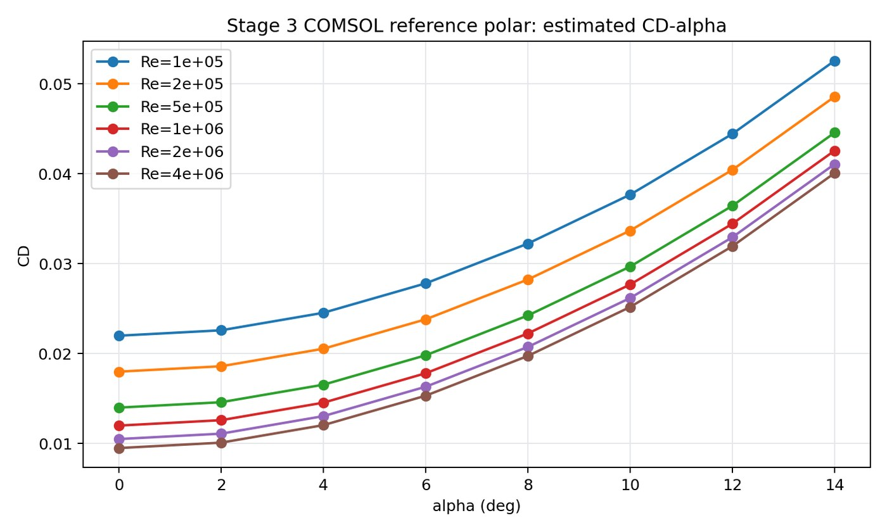
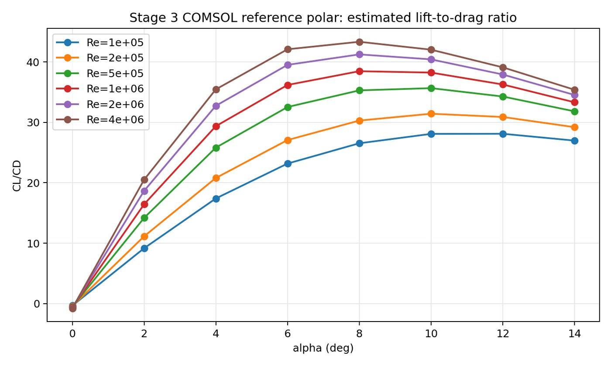
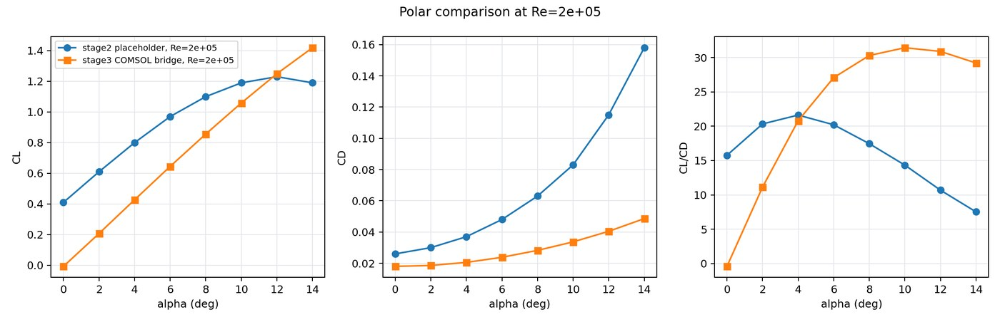
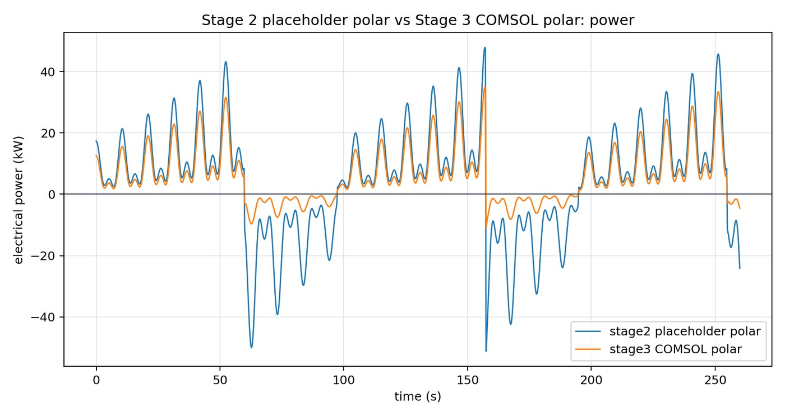
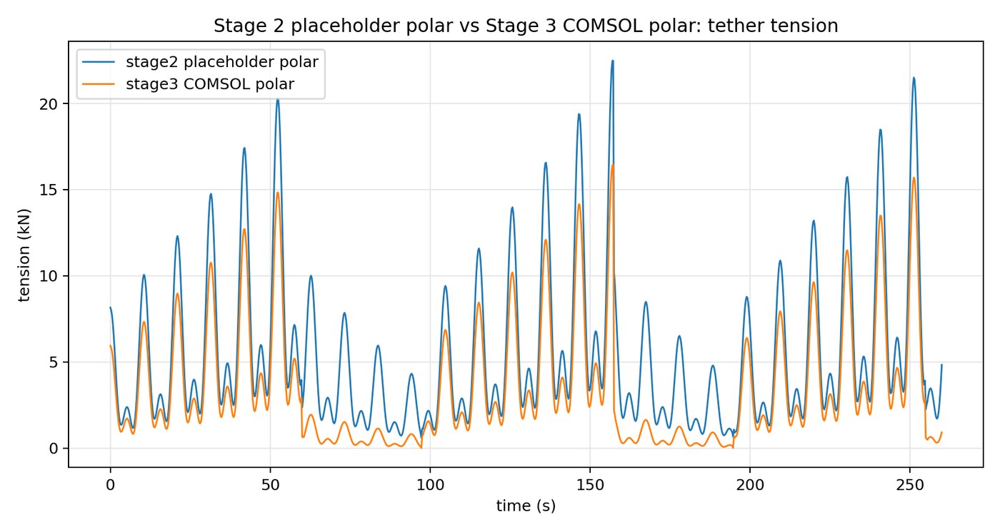
04
汇报材料预览
最终交付不是散图，而是把建模边界、结果曲线和验收结论整理成汇报结构。下面是复刻汇报页的缩略预览。
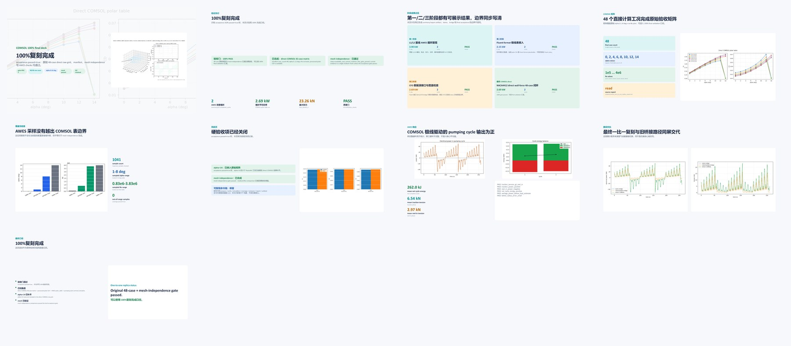
工程仿真
能区分 COMSOL、Python 各自承担的证据边界。
数值计算
围绕轨迹、张力、功率和能量账本做结果核对。
材料整理
把工程过程压缩成可审阅、可汇报的页面结构。
结果验证
保留输入曲线、输出曲线和对比图，避免只展示结论。